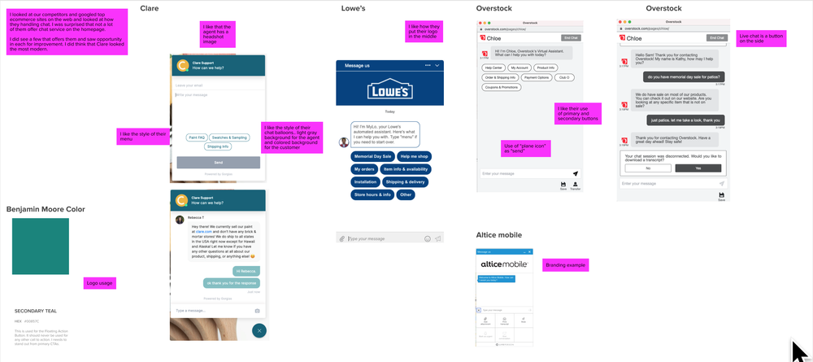
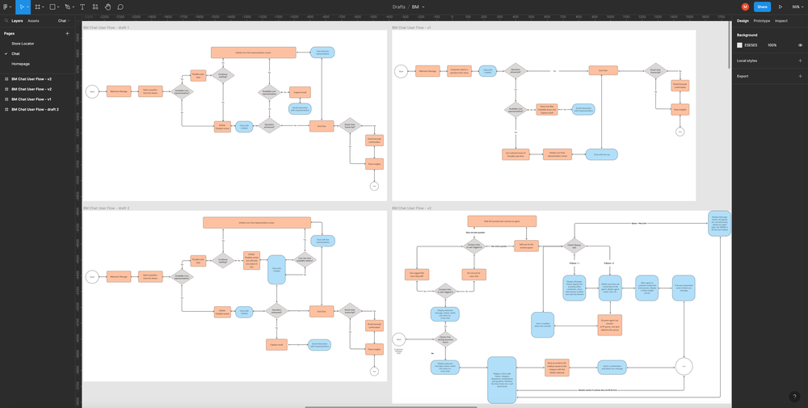
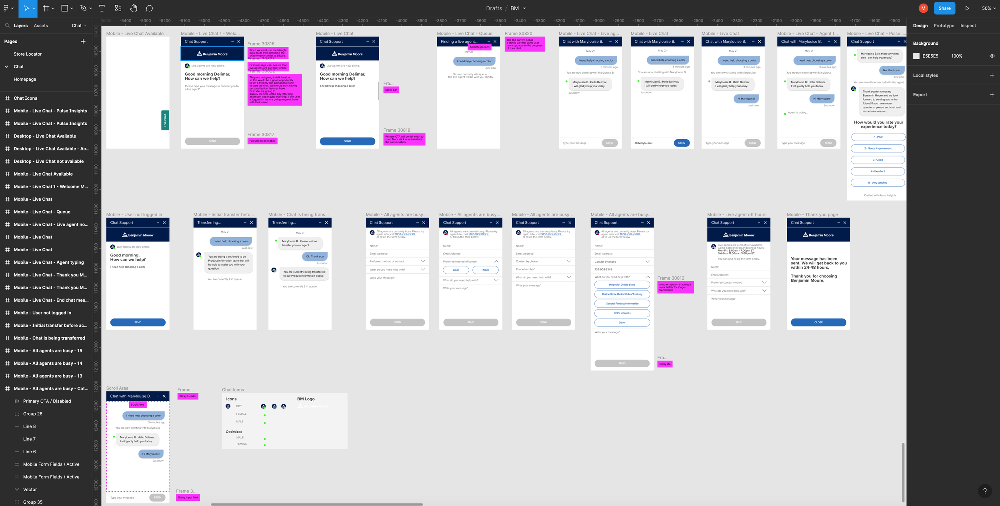
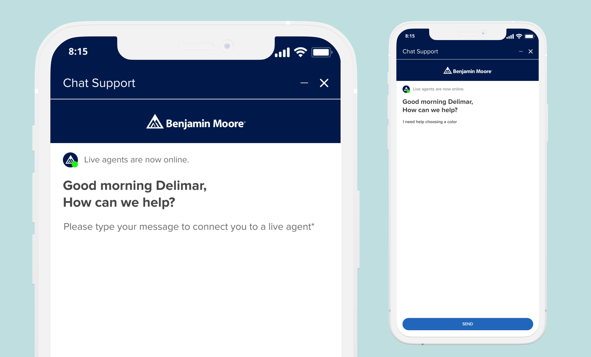
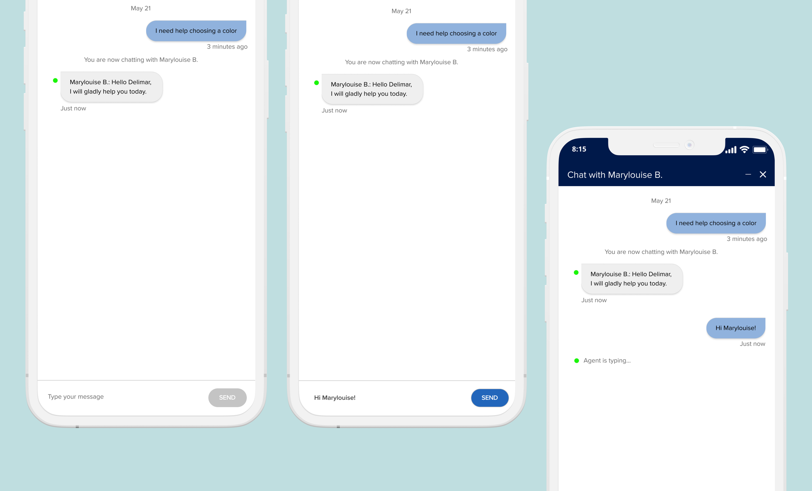
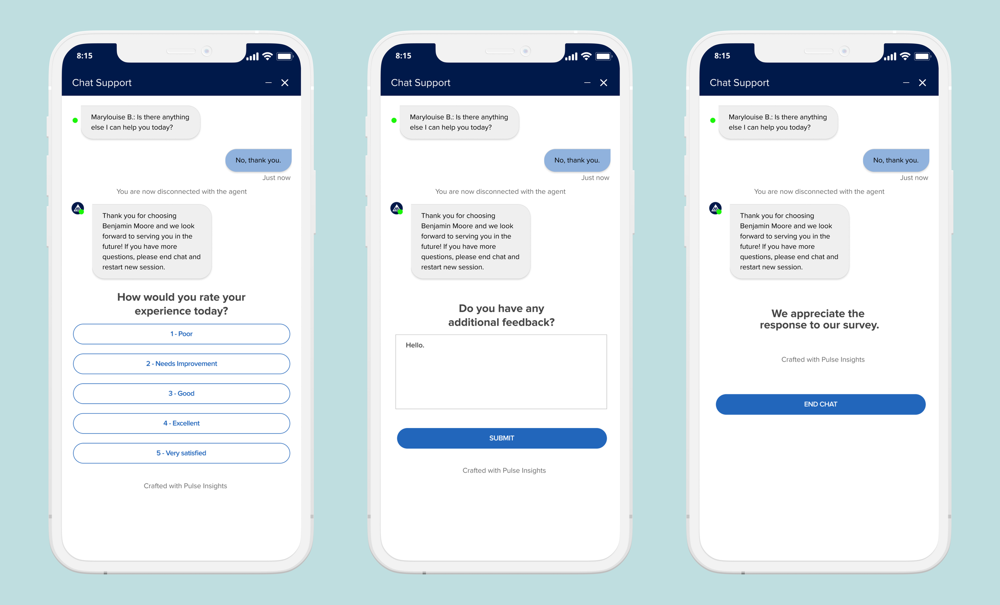

Benjamin Moore · UX and Product Designer · May 2021 – July 2021
Improving the customer chat.
The company released its first version of customer chat on March 8, 2021. Customers were getting a poor experience as they were mostly talking to a bot instead of a live chat agent. The chat UI also needed improvement.

Problem
The company released its first version of customer chat on March 8, 2021. Customers were getting a poor experience as they were mostly talking to a bot instead of a live chat agent. The chat UI also needed improvement.
Solution
Create a customer chat feature that will let customers engage with a live chat agent as soon as possible. Provide customers with a friendly, simple, and branded experience.
Summary of what I did
Discovery + Research
- Competitive analysis
- Facilitated working sessions to discover product challenges and goals
- Stakeholder interviews
Design
- Low fidelity mocks
- High fidelity mocks
- Figma prototypes
Collaboration
Collaborated with:
- Stakeholders
- Product Manager
- Lead developer and team developers
- Marketing team
- Data team
QA
- Provided initial visual QA
My Role
I led all design efforts for all the company initiatives during my time at Benjamin Moore. This involved research, rapid prototyping, wire framing, and advocating the importance of UX principles throughout the organization.
Chat 2.0
I was tasked to help launch the second iteration of customer chat which launched a couple of months prior. After talking to various stakeholders, we identified 3 primary problems with Chat 1.0.
Poor customer experience
Customers were talking to BOTS most of the time which resulted into customer frustration and long useless conversations.
Wasted resources
Data showed that there were a lot of live agent representatives that were available but customers weren't able to get to them.
Branding could be improved
The Chat 1.0 design was too generic and needed improvement.
Opportunity
How can we make Chat 2.0 resource efficient, and deliver a highly satisfactory customer experience using a well-branded user interface?
We concentrated on solving our key problems during the redesign.
Improve customer experience.
I facilitated workshop sessions to improve the customer flow that helps the user answer their questions in various parts of the customer experience.
Make it resource-efficient.
I highly advised the team to change how the initial experience is being started. Instead of starting with a bot to engage with the customer, let's start with an available live agent right away.
Brand it, Benjamin Moore.
I looked at other chat services and how other companies are branding their chat experience.
Competitive Analysis

User Flow

Figma Prototype

Final Designs
Chat 2.0 went through a series of iterations before finalizing. The following designs were developed to be shipped publicly to everyone across the world.


